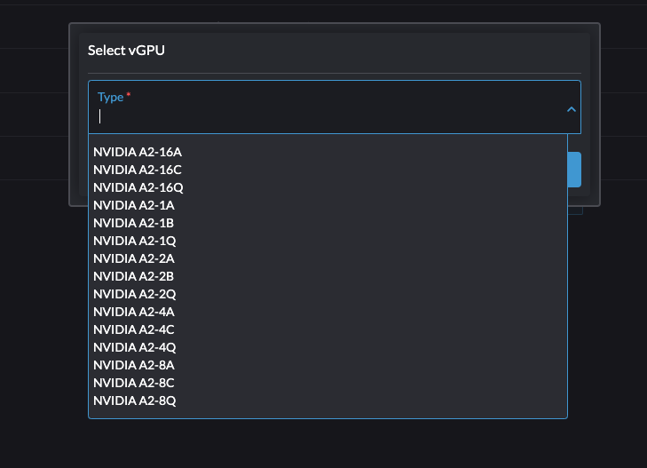

|
Ce document a été traduit à l'aide d'une technologie de traduction automatique. Bien que nous nous efforcions de fournir des traductions exactes, nous ne fournissons aucune garantie quant à l'exhaustivité, l'exactitude ou la fiabilité du contenu traduit. En cas de divergence, la version originale anglaise prévaut et fait foi. |
Prise en charge vGPU
SUSE Virtualization est capable de partager le support GPU NVIDIA pour la virtualisation d’E/S à racine unique (SR-IOV). Cette capacité supplémentaire, fournie par le produit complémentaire pcidevices-controller, exploite sriov-manage pour la gestion des GPU.
Pour déterminer si votre GPU prend en charge le SR-IOV, consultez la documentation de l’appareil. Pour plus d’informations sur la création d’un vGPU NVIDIA qui prend en charge le SR-IOV, consultez la documentation NVIDIA.
Vous devez activer le produit complémentaire nvidia-driver-toolkit pour pouvoir gérer le cycle de vie des vGPUs sur les appareils GPU.
Syntaxe
-
Dans l’interface utilisateur, allez à Avancé → Appareils GPU SR-IOV et vérifiez les éléments suivants :
-
Les appareils GPU ont été scannés.
-
Un objet
sriovgpudevices.devices.harvesterhci.ioassocié a été créé.
-
-
Localisez l’appareil que vous souhaitez activer, puis sélectionnez ⋮ → Activer.

-
Allez à l’écran Appareils vGPU et vérifiez les objets
vgpudevices.devices.harvesterhci.ioassociés.Laissez un certain temps au pcidevices-controller pour scanner les appareils vGPU et pour que l’interface utilisateur SUSE Virtualization affiche les informations sur l’appareil.

-
Sélectionnez un vGPU et configurez un profil.

La liste des profils dépend du GPU et de l’arborescence /sys sous-jacente de l’hôte. Pour plus d’informations sur les profils disponibles et leurs capacités, consultez la documentation NVIDIA.
Après avoir sélectionné le premier profil, le pilote NVIDIA configure automatiquement les profils disponibles pour les vGPUs restants.
-
Attachez le vGPU à une nouvelle machine virtuelle ou à une machine virtuelle existante.

Une fois qu’un vGPU a été attribué à une machine virtuelle, il peut ne pas être possible de désactiver la machine virtuelle tant que le vGPU n’est pas retiré.
Appareils vGPU basés sur MIG
|
Les informations suivantes s’appliquent uniquement aux GPU NVIDIA qui prennent en charge le partitionnement basé sur GPU à instances multiples (MIG), tels que les A100, H100 et H200. |
SUSE Virtualization permet de partager des vGPUs basés sur MIG entre des machines virtuelles. Les vGPUs basés sur MIG résident sur une instance GPU dans un GPU physique compatible avec MIG. Chaque vGPU basé sur MIG a un accès exclusif aux moteurs de l’instance GPU, y compris les moteurs de calcul et de décodage vidéo.
SUSE Virtualization crée l’objet MIGConfiguration uniquement si le GPU détecté prend en charge le partitionnement basé sur MIG.
Activation des appareils vGPU basés sur MIG
-
Dans l’interface utilisateur SUSE Virtualization, allez à →Configurations vGPU MIG avancées et vérifiez les éléments suivants :
-
Une configuration MIG a été créée pour prendre en charge les appareils GPU.
-
Un objet
migconfiguration.devices.harvesterhci.ioassocié a été créé.
-
-
Définissez les profils MIG pour votre GPU et activez la configuration MIG.
Consultez la documentation du GPU pour des informations sur la configuration MIG et les combinaisons disponibles.

-
Allez à Appareils vGPU avancés→ et activez le dispositif vGPU associé à la configuration MIG.
Les nouveaux profils MIG créés sont disponibles en tant que types de vGPU valides.
Une fois activé, le dispositif vGPU peut être utilisé avec une machine virtuelle.

limites
Attachement de plusieurs vGPU
L’attachement de plusieurs vGPU à une VM peut échouer pour les raisons suivantes :
-
Tous les profils de vGPU ne prennent pas en charge l’attachement de plusieurs vGPU. La documentation NVIDIA répertorie les profils de vGPU qui prennent en charge cette fonctionnalité. Par exemple, si vous utilisez des GPU NVIDIA A2 ou A16, notez que seuls les vGPU de la série Q vous permettent d’attacher plusieurs vGPU.

-
Seul 1 dispositif GPU dans la définition de la VM peut avoir
ramFBactivé. Pour attacher plusieurs vGPU, vous devez modifier la configuration de la VM (en YAML) et ajoutervirtualGPUOptionsà tous les dispositifs vGPU non principaux.virtualGPUOptions: display: ramFB: enabled: falseProblème connexe : https://github.com/harvester/harvester/issues/5289
Plafond sur les vGPU utilisables
Lorsque le support vGPU est activé sur un GPU, le pilote NVIDIA crée par défaut 16 dispositifs vGPU. Après avoir sélectionné le premier profil, le pilote NVIDIA configure automatiquement les profils disponibles pour les vGPU restants.
Le profil utilisé détermine également le nombre maximum de vGPU disponibles pour chaque GPU. Une fois le maximum atteint, aucun profil ne peut être sélectionné pour les vGPU restants et ces dispositifs ne peuvent pas être configurés.
Exemple (NVIDIA A2 GPU) :
Si vous sélectionnez le profil NVIDIA A2-4Q, vous ne pouvez configurer que 4 dispositifs vGPU. Une fois ces dispositifs configurés, vous ne pouvez sélectionner aucun profil pour les vGPU restants.

Plongée technique approfondie
Le contrôleur pcidevices introduit les CRDs suivants :
-
sriovgpudevices.devices.harvesterhci.io
-
vgpudevices.devices.harvesterhci.io
Au démarrage, le contrôleur pcidevices scanne l’hôte à la recherche de GPU NVIDIA qui prennent en charge les dispositifs vGPU SR-IOV. Lorsque de tels dispositifs sont trouvés, ils sont représentés comme un CRD.
Exemple :
apiVersion: devices.harvesterhci.io/v1beta1
kind: SRIOVGPUDevice
metadata:
creationTimestamp: "2024-02-21T05:57:37Z"
generation: 2
labels:
nodename: harvester-kgd9c
name: harvester-kgd9c-000008000
resourceVersion: "6641619"
uid: e3a97ee4-046a-48d7-820d-8c6b45cd07da
spec:
address: "0000:08:00.0"
enabled: true
nodeName: harvester-kgd9c
status:
vGPUDevices:
- harvester-kgd9c-000008004
- harvester-kgd9c-000008005
- harvester-kgd9c-000008016
- harvester-kgd9c-000008017
- harvester-kgd9c-000008020
- harvester-kgd9c-000008021
- harvester-kgd9c-000008022
- harvester-kgd9c-000008023
- harvester-kgd9c-000008006
- harvester-kgd9c-000008007
- harvester-kgd9c-000008010
- harvester-kgd9c-000008011
- harvester-kgd9c-000008012
- harvester-kgd9c-000008013
- harvester-kgd9c-000008014
- harvester-kgd9c-000008015
vfAddresses:
- "0000:08:00.4"
- "0000:08:00.5"
- "0000:08:01.6"
- "0000:08:01.7"
- "0000:08:02.0"
- "0000:08:02.1"
- "0000:08:02.2"
- "0000:08:02.3"
- "0000:08:00.6"
- "0000:08:00.7"
- "0000:08:01.0"
- "0000:08:01.1"
- "0000:08:01.2"
- "0000:08:01.3"
- "0000:08:01.4"
- "0000:08:01.5"
Lorsqu’un SRIOVGPUDevice est activé, le contrôleur pcidevices travaille avec le daemonset nvidia-driver-toolkit pour gérer les dispositifs GPU.
Lors d’un scan ultérieur de l’arborescence /sys par les pcidevices, les dispositifs vGPU sont scannés par le contrôleur pcidevices et gérés comme VGPUDevices CRD.
NAME ADDRESS NODE NAME ENABLED UUID VGPUTYPE PARENTGPUDEVICE harvester-kgd9c-000008004 0000:08:00.4 harvester-kgd9c true dd6772a8-7db8-4e96-9a73-f94c389d9bc3 NVIDIA A2-4A 0000:08:00.0 harvester-kgd9c-000008005 0000:08:00.5 harvester-kgd9c true 9534e04b-4687-412b-833e-3ae95b97d4d1 NVIDIA A2-4Q 0000:08:00.0 harvester-kgd9c-000008006 0000:08:00.6 harvester-kgd9c true a16e5966-9f7a-48a9-bda8-0d1670e740f8 NVIDIA A2-4A 0000:08:00.0 harvester-kgd9c-000008007 0000:08:00.7 harvester-kgd9c true 041ee3ce-f95c-451e-a381-1c9fe71918b2 NVIDIA A2-4Q 0000:08:00.0 harvester-kgd9c-000008010 0000:08:01.0 harvester-kgd9c false 0000:08:00.0 harvester-kgd9c-000008011 0000:08:01.1 harvester-kgd9c false 0000:08:00.0 harvester-kgd9c-000008012 0000:08:01.2 harvester-kgd9c false 0000:08:00.0 harvester-kgd9c-000008013 0000:08:01.3 harvester-kgd9c false 0000:08:00.0 harvester-kgd9c-000008014 0000:08:01.4 harvester-kgd9c false 0000:08:00.0 harvester-kgd9c-000008015 0000:08:01.5 harvester-kgd9c false 0000:08:00.0 harvester-kgd9c-000008016 0000:08:01.6 harvester-kgd9c false 0000:08:00.0 harvester-kgd9c-000008017 0000:08:01.7 harvester-kgd9c false 0000:08:00.0 harvester-kgd9c-000008020 0000:08:02.0 harvester-kgd9c false 0000:08:00.0 harvester-kgd9c-000008021 0000:08:02.1 harvester-kgd9c false 0000:08:00.0 harvester-kgd9c-000008022 0000:08:02.2 harvester-kgd9c false 0000:08:00.0 harvester-kgd9c-000008023 0000:08:02.3 harvester-kgd9c false 0000:08:00.0
Lorsqu’un utilisateur active et sélectionne un profil pour le VGPUDevice, le contrôleur pcidevices configure le dispositif et met en place le bon profil sur ledit dispositif.
apiVersion: devices.harvesterhci.io/v1beta1
kind: VGPUDevice
metadata:
creationTimestamp: "2024-02-26T03:04:47Z"
generation: 8
labels:
harvesterhci.io/parentSRIOVGPUDevice: harvester-kgd9c-000008000
nodename: harvester-kgd9c
name: harvester-kgd9c-000008004
resourceVersion: "21051017"
uid: b9c7af64-1e47-467f-bf3d-87b7bc3a8911
spec:
address: "0000:08:00.4"
enabled: true
nodeName: harvester-kgd9c
parentGPUDeviceAddress: "0000:08:00.0"
vGPUTypeName: NVIDIA A2-4A
status:
configureVGPUTypeName: NVIDIA A2-4A
uuid: dd6772a8-7db8-4e96-9a73-f94c389d9bc3
vGPUStatus: vGPUConfigured
Le contrôleur pcidevices exécute également un plugin de dispositif vGPU, qui annonce les détails des différents profils vGPU au kubelet. Cela est ensuite utilisé par le planificateur k8s pour placer les vGPUs demandés par la VM sur les nœuds appropriés.
(⎈|local:harvester-system)➜ ~ k get nodes harvester-kgd9c -o yaml | yq .status.allocatable cpu: "24" devices.kubevirt.io/kvm: 1k devices.kubevirt.io/tun: 1k devices.kubevirt.io/vhost-net: 1k ephemeral-storage: "149527126718" hugepages-1Gi: "0" hugepages-2Mi: "0" intel.com/82599_ETHERNET_CONTROLLER_VIRTUAL_FUNCTION: "1" memory: 131858088Ki nvidia.com/NVIDIA_A2-4A: "2" nvidia.com/NVIDIA_A2-4C: "0" nvidia.com/NVIDIA_A2-4Q: "2" pods: "200"
Le contrôleur pcidevices effectue également la configuration de l’intégration avec kubevirt et annonce les dispositifs vGPU comme des dispositifs gérés de l’extérieur dans le CR Kubevirt pour garantir que la VM peut consommer le vGPU.